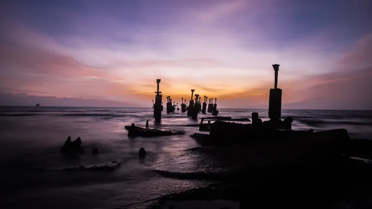
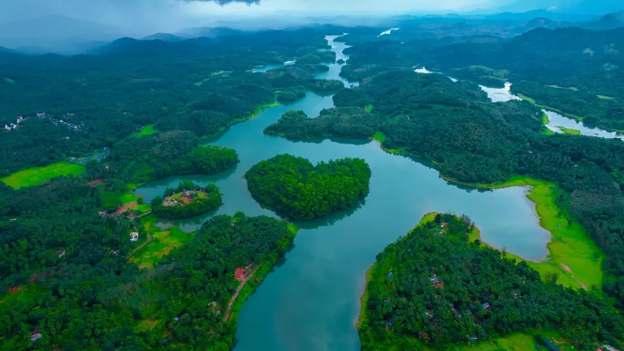
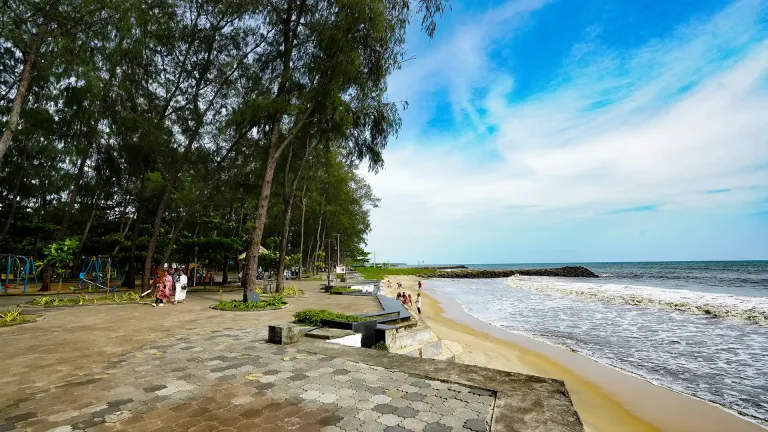
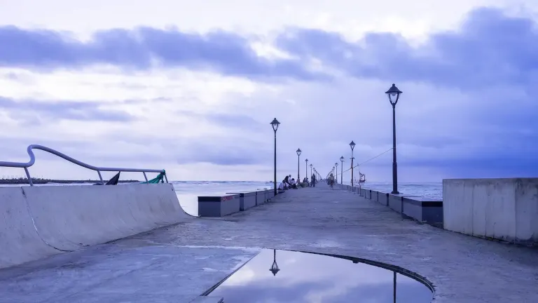

City Coast
Kozhikode Beach & SM Street
Pair an evening by the old beach piers with a walk through the city centre and Mittai Theruvu, the traditional Sweet Meat Street.

Maritime history, lively food streets, Arabian Sea sunsets, old trading neighbourhoods and a convenient gateway to Wayanad.
Also known as Calicut, Kozhikode grew as a major spice-trading port under the Zamorins and welcomed merchants from across the Indian Ocean. Today its appeal lies in the combination of heritage, generous local food, beaches and easy onward travel towards Wayanad and Kannur.

Pair an evening by the old beach piers with a walk through the city centre and Mittai Theruvu, the traditional Sweet Meat Street.

Visit the historic coast associated with Vasco da Gama's 1498 arrival, while treating the beach as both a heritage site and a working local shoreline.

Explore an old port town known for uru wooden-ship building, the Chaliyar river mouth and a waterfront shaped by maritime craft.
Kozhikode was the seat of the Zamorins and a major medieval centre of Indian Ocean trade. Arab, Chinese and East African connections shaped the port before Portuguese arrival in 1498 changed the region's political and commercial history.
Official Kozhikode guideKozhikode works well before the climb to Wayanad or as the first stop on a Malabar coast journey towards Kannur and Bekal. It is not a named overnight stop in the current 10-day plan, but it is a practical arrival point for that northern route.